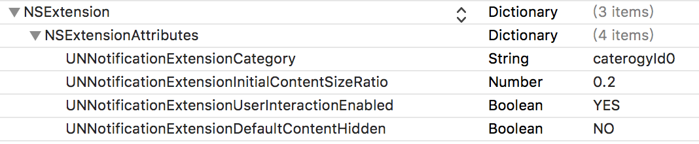

iOS12对通知进行了比较大的升级，带来了更好的用户体验。主要增加了以下新功能：
- 通知分组
- 通知内容扩展
- 通知管理
- 临时授权
- 重要通知
1.通知分组
系统默认将单个APP作为一个分组，但是通过Thread identifier，我们可以自定义分组
本地通知设置分组：
1
2
3
4
| let content = UNMutableNotificationContent()
content.title = "Notifications Team"
content.body = "WWDC session after party"
content.threadIdentifier = "notifications-team-chat"
|
1
2
3
4
5
6
7
8
9
10
| 远程通知设置分组：
{
"aps" : {
"alert" : {
"title" : "Notifications Team",
}
}
"body" : "WWDC session after party"
"thread-id" : "notifications-team-chat"
}
|
注意，即时我们自定义了分组，用户仍然可以在设置中进行更改：
- 自动：按开发人员定义的规则分组
- 按应用：忽略发人员定义的分组，只有应用一个分组
- 关：关闭分组功能，按iOS12之前的旧样式展示通知
分组还可以添加摘要信息：
使用UNNotificationCategory类，我们可以定义摘要格式
摘要格式可以分为以下几种：
1
2
3
4
5
6
7
8
9
10
11
12
13
14
15
16
17
| 本地通知设置摘要：
NSString *summaryFormat = @"%u more message from %@";
NSString *caterogyId0 = @"caterogyId0";
NSString * hiddenPreviewsBodyPlaceholder = @"%u个秘密哟";
UNNotificationCategory *category = [UNNotificationCategory categoryWithIdentifier:caterogyId0 actions:@[] intentIdentifiers:@[] hiddenPreviewsBodyPlaceholder: hiddenPreviewsBodyPlaceholder categorySummaryFormat:summaryFormat options:0];
UNMutableNotificationContent *content = [[UNMutableNotificationContent alloc] init];
content.title = @"title“;
content.subtitle = @"subtitle“;
content.threadIdentifier = @"thread-knowledge";
content.categoryIdentifier = caterogyId0;
content.summaryArgument = @"Work";
content.summaryArgumentCount = 1;
/** 注意要将content.categoryIdentifier设置为对应的UNNotificationCategory
* %u指示组内还有多少个通知，%@对应content.summaryArgument的值
* hiddenPreviewsBodyPlaceholder：iOS11开始支持，当用户设置不显示预览的时候，通知将隐藏真实内容，只呈现这个占位字符串
* content.summaryArgumentCount默认为1
*/
|
1
2
3
4
5
6
7
8
9
10
11
12
| // 远程通知payload：
{
"aps" : {
"alert" : {
"body" : "…",
"summary-arg" : "Work",
"summary-arg-count" : 2
},
"thread-id" : "notify-team-ios"
"category" : "MEETING_INVITATION"
}
}
|
2. 通知内容扩展
这个功能可以让我们自定义通知的UI，并且支持用户交互。
我们需要新建一个target：Notification Content extensions.
Xcode菜单栏： File → New → Target.
建好后会自动生成4个文件：
可通过MainInterface自定义UI。
info.plist里的参数

UNNotificationExtensionCategory: 对应在通知中心设置的UNNotificationCategory，自定义UI将会应用在这类通知上
UNNotificationExtensionInitialContentSizeRatio：自定义视图高度和宽度之比率
UNNotificationExtensionUserInteractionEnabled: 默认NO, 如果想要自定义的控件响应交互事件，必须将此项设置为YES
UNNotificationExtensionDefaultContentHidden: 默认NO,如果设为YES,默认的通知内容会被隐藏，只展示自定义的视图
3. 通知管理
管理通知变得更便捷，在任意一个通知左滑就可以打开管理菜单，可以将立即关闭通知或者变成静默通知
4. 临时授权
启用临时授权功能后，将不会再应用第一次启动的时候弹出那个烦人的授权窗口。同时通知将以【静默推送】的方式展示在通知中心里。
【静默推送】不会有通知音效，也不会直接弹出，也不会出现在锁屏，只会乖乖地呆在用户的通知中心。当用户下拉查看通知中心的时候，带有「临时授权」的特殊通知就会静静地躺在哪里，等待用户的下一步确认
用户可以选择 Keep （保留）或者 Turn off（关闭）。点击「保留」后，用户还可以选择「显式推送」或是「继续隐式推送」
5. 重要通知
重要通知可以无视勿扰模式的设置，直接弹出并且以任意音量播放通知音效
但是这需要向苹果申请权限，因为只有是医疗、安防、人防、灾难预警类的应用，才能使用这项特权。 而且，还需要让用户对「重要通知」单独授权才能使用
重要通知权限申请：Request a Critical Alert Notifications Entitlement
参考资料
What’s New in User Notifications
Using Grouped Notifications
Customizing the Appearance of Notifications
附件